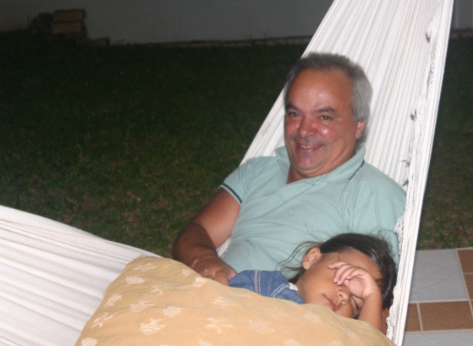

Giba Assis Brasil


Conhece o jogo do Dicionário? Pra jogar na praia, uma vantagem que ele tem sobre os jogos de cartas é que pode participar qualquer número de pessoas, a partir de 4 (se bem que acima de 12 é recomendável formar duplas, pra que as rodadas não fiquem longas demais). Outra vantagem é que dá pra misturar quem quer jogar a sério com quem busca apenas se divertir, sem prejuízo considerável para nenhum dos grupos. O problema é que tem que lembrar de colocar um Aurélio ou um Houaiss no porta-malas. E, claro, caneta e papel pra todo mundo.
Em cada rodada, em sistema de rodízio, um dos participantes é o "síndico". A rodada possui 5 etapas: escolha, redação, leitura, votação e contagem.
(1) Na primeira etapa, o síndico consulta o dicionário, escolhe uma palavra pouco conhecida e a propõe aos demais. Se alguém tiver certeza sobre o significado da palavra, ela é vetada e o síndico precisa escolher outra.
(2) Definida a palavra da rodada, cada participante escreve uma definição possível para ela e a entrega ao síndico. O síndico também escreve a sua definição (a correta, copiada do dicionário) e a mistura com as outras.
(3) Na ordem que achar mais conveniente, o síndico lê em voz alta (de preferência, sem rir) todas as definições propostas para a palavra.
(4) Cada participante (menos o síndico) vota na definição que achar mais provável. Aqui a polêmica: eu sempre achei que o voto tem que ser secreto, no papel, pra que a opinião de um não influencie a do outro. Mas, por comodismo ou falta de papel, quase sempre a votação é aberta.
(5) A contagem mais comum é: quem acerta a definição correta ganha um ponto; cada voto numa definição errada dá um ponto para quem a redigiu e um ponto para o síndico. Às vezes combina-se ainda um bônus de x pontos se o síndico conseguir que ninguém acerte a definição correta.
Ou seja, o síndico tem que procurar palavras cujas definições no dicionário não se pareçam com uma definição de dicionário. E os demais têm que redigir definições que enganem os outros e pareçam ter sido tiradas do dicionário. Mas, como ganhar pontos nem sempre é o que mais importa (ainda mais na praia), sempre vai ter alguém pra fazer definições absurdas, trocadilhos, brincadeiras sobre o tempo ou alusões indiretas à bunda da dona da casa. E o pior é que sempre vai ter alguém que vai votar nessas definições, para desagrado do síndico e do marido.
Em princípio, o jogo termina quando se completa uma volta, e todo mundo já foi síndico por uma rodada. Mas isso também depende da entrada e saída de participantes (ao contrário dos jogos de cartas, no Dicionário ninguém se considera obrigado a ficar jogando até o fim) e da possibilidade de o vinho ou a pipoca acabarem antes.
Eu gosto de colecionar definições interessantes que surgem nestes jogos. Por exemplo:
ACANTÓBOLO - a parte mais achocolatada do bolo, aquela que as crianças preferem (na verdade é um instrumento em forma de pinça);
AMOJADO - aborrecido, entristecido, macambúzio, fodido mesmo (é cheio de leite ou suco);
CAÚBA - espécie de abelha de corpo trissegmentado, antenas tripartidas e mel tri doce (é um peixe, o mesmo que rabo-aberto);
EUBAGE - cada uma das partes de que se compõe o todo (é um druida);
GALIPÓDIO - diz-se do indivíduo de modos afetados e odor desagradável, supostamente com um pé na França (é a terebintina impura);
JUIPONGA - ex-hippie, agora trabalhando na justiça (é o sapo ferreiro);
SUUMBA - ogia paticada po pessoas com poblemas de ponúncia (é um peso de madeira numa flecha).
Ás vezes o interessante vem do próprio dicionário, e é difícil imaginar uma definição mais inusitada do que a original:
ESTROVENGA - coisa complicada, misteriosa;
GENETLIOLOGIA - arte de explicar o horóscopo;
JUCIRI - erva mais ou menos trepadeira;
JUGADA - terra que uma junta de bois pode lavrar em um dia;
SARARACA - flecha usada para fisgar tartarugas e peixes fluviais;
Por fim, tem algumas palavras que são simplesmente o que são, e só o que podemos fazer é contemplá-las (nem falo em aprender, que pra isso o jogo não serve), e aguardar a próxima rodada:
DROGUETE - estofado de lã;
PACHEQUISMO - mediocridade;
PAQUIFE - adorno arquitetônico de folhagens;
TIQUARA - qualquer bebida refrigerante.
Numa noite memorável, 6 pra 7 de fevereiro de 2006, o jogo foi tão legal, a presença dos amigos tão agradável, que quando todos foram embora eu cometi um soneto. É, mais um.
**********
SONETO DICIONARÍSTICO
Canto Grande, 07/02/2006
Não têm paquifes as casas do Canto Grande
E as juciris não semitrepam nas paredes
Não há droguetes para amaciar as redes
Mas cada ano a estrovenga mais se expande
Não venha agora me acusar de pachequismo
Porque só fica de caúba quem quiser
Eubages devem viver perto do abismo
Genetliologia é coisa de mulher
Mas à noite, com as barrigas amojadas
Pela tiquara e outras bebidas menos fracas
Na hora em que da juiponga ouve-se o urro
Andamos uma ou até duas jugadas
Sem que as suumbas impeçam as sararacas
E nos jogamos em volta do amansa-burro
**********
Eu já propus uma variação do Dicionário que seria a Enciclopédia, para incluir não apenas palavras mas também nomes próprios, de pessoas ou de lugares, reais ou fictícios. Mas nunca consegui jogar essa modalidade, entre outras coisas por falta de espaço no porta-malas.
Talvez agora, com a chegada da internet sem fio ao Canto Grande.
Mas, sem o Zeca, não vai ter tanta graça.

Zeca e Luiza

{kind=link}
que achado esse dicionário giba! (nunca pensou em um roteiro anos 70 em torno dele, de um fim de semana na praia e tal, baixo orçamento?) e este soneto de tua lavra. mas q inspiração (e piração!?). dei boas risadas lendo o texto final do dorival q tá no site da casa. prá mim é um dos clássicos da geração e do nosso cinema. abr
Ah, Giba. Nessa época de pressão, ler sobre o dicionário e mais o Zeca no fim. Bah, choro na certa. Tô totalmente amojada. Bjo
Olá, Giba, fui aluno do 1° curso "Introdução ao Fazer Cinema", em 1989, e acabo de enviar uma mensagem perguntando sobre descontos em compras na loja de vocês. Interesso-me pela caixa com 4 DVDs onde se inclui "O Amor nos Anos 90".
Na época fazia mestrado em Botânica na UFRGS e era bolsista na FZB. Em 94 passei num concurso para professor do Cefet-MG em Araxá, MG, e desde então estou aqui. Quando nos encontrávamos na rua, no brique ou em algum supermercado você me reconhecia, mas hoje, passados 15 anos, talvez seja pedir muito que você se lembre de mim. Mas tudo isso é fora do tópico.
Não conhecia o jogo em questão e, na condição de apaixonado pela língua, achei-o interessantíssimo. E o melhor de tudo é que me deu a ideia de aplicá-lo, com adaptações, em sala de aula. Substituiria o significado de palavras por conceitos de biologia, e o síndico seria eu, que levaria as perguntas prontas. Uma turma de 30 alunos é dividida em 6 grupos de 5 e os "pontos", serão pontos de verdade. Só duvido que saiam antes do fim...
Por enquanto é isso. Foi um prazer mandar essa mensagem e pretendo continuar participando. Aliás, pra mim é um prazer o reencontro com pessoas que um dia passaram por nós e que, por contingências da vida, tornaram-se distantes do nosso convívio. Meu cordial abraço,
José Carlos Fernandes da Costa